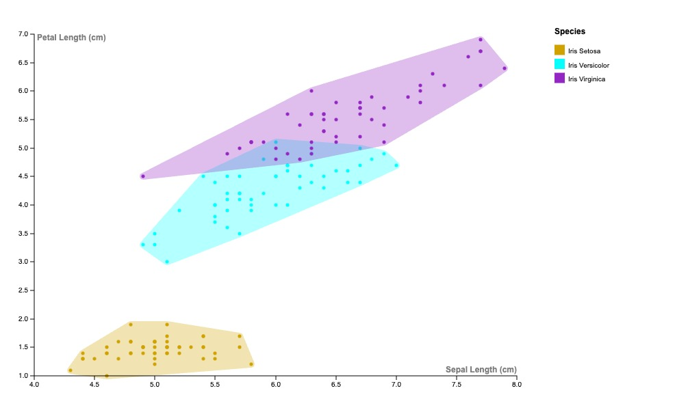

Grace's Favorites
This page is dedicated to my favorite media that can't be displayed in a single image.
Transcription of "Peter and the Wolf":
Narrator: My dear children, young and old, each character in this tale is represented by an instrument in the orchestra. The bird, via flute ( upbeat flute solo ), the duck by an oboe ( slow oboe solo ), the cat by a clarinet in a low register ( low clarinet solo ), the grandfather by a bassoon ( slow bassoon solo ), the wolf by horn ( ominous horn solo ), peter by the string instruments ( upbeat strings ), the shooting of the hunters by kettle drums ( loud, harsh kettle drums ). And now dear children, here is our story. Early one morning, Peter opened the gate, and went out into the big green meadow ( upbeat strings ending in progressive scales ). On the branch of a big tree sat a little bird, Peter's friend. "All is quiet!" chirped the little bird gayly ( upbeat, high-pitched flute solo ) ( upbeat strings and flute duet ). Soon, a duck came waddling around. She was glad that Peter had not closed the gate, and decided to have a nice swim in the deep pond in the meadow. ( relaxed oboe solo ) ( brief upbeat flutes ) ( brief relaxed oboes ) ( brief upbeat flutes ) ( calm strings ) [Background music of oboes, flutes, and strings solos] When the little bird saw the duck, he flew down, settled himself in the grass beside the duck, and shrugged his shoulders. ( brief duet between strings and oboe )
An instrumental version of "Love Song" by Lana Del Rey
Jo's monologue from Greta Gerwig's "Little Women"
Petal and sepal length of different species of iris
